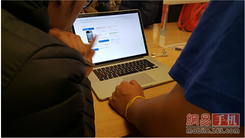

相信很多网友都已经获悉了关于苹果官方推出的“以旧换新”服务，大家也可以通过苹果官网看到关于“以旧换新” 服务的消息，苹果官网列出了iPhone及其它设备的以旧换新安排，官方将其称之为“Apple重复使用及循环利用计划”。

仅仅通过官方消息与媒体内容很多网友应该也是云里雾里，所以网易手机频道也去了苹果零售店进行了"以旧换新"的服务咨询。
五问苹果以旧换新
由于苹果是首次在国内开始这项“以旧换新”的服务，所以目前用户只能带着旧的iPhone/iPad，自行前往苹果 在国内10大城市的18家官方直营零售店。而由于需要苹果工作人员当场对旧机器进行鉴定，所以苹果官方授权的服务 商无法提供这项“以旧换新”的服务。相比于苹果零售店提供的维修等其他服务需要在网上先进行预约，这项“以旧换 新”的服务目前无需提前在线预约，用户直接前往直营店即可。
由于苹果是首次在国内开始这项“以旧换新”的服务，所以目前用户只能带着旧的iPhone/iPad，自行前往苹果 在国内10大城市的18家官方直营零售店。而由于需要苹果工作人员当场对旧机器进行鉴定，所以苹果官方授权的服务 商无法提供这项“以旧换新”的服务。